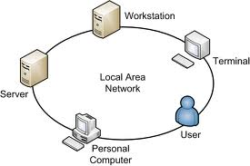
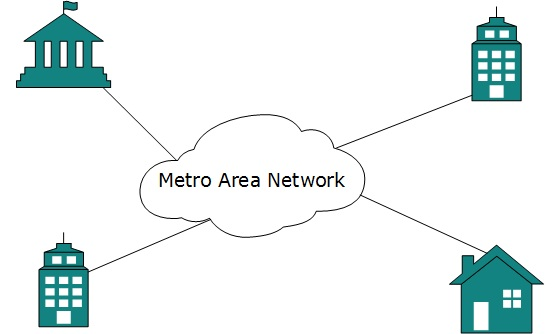
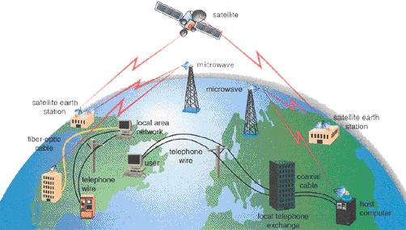

หน่วยที่ 1 ความหมายและองค์ประกอบของเครือข่ายคอมพิวเตอร์
เครือข่ายคอมพิวเตอร์ หรือ คอมพิวเตอร์เน็ตเวิร์ก (อังกฤษ: computer network; ศัพท์บัญญัติว่า ข่ายงานคอมพิวเตอร์) คือเครือข่ายการสื่อสารโทรคมนาคมระหว่างคอมพิวเตอร์จำนวนตั้งแต่สองเครื่องขึ้นไปสามารถสื่อสาร แลกเปลี่ยนข้อมูล และใช้ทรัพยากรร่วมกัน ด้วยการเชื่อมต่อระหว่างอุปกรณ์คอมพิวเตอร์ต่างๆในเครือข่าย จะใช้สื่อที่เป็นสายเคเบิลหรือสื่อไร้สาย
องค์ประกอบของเครือข่ายคอมพิวเตอร์
- 1. เครื่องคอมพิวเตอร์ที่ใช้เชื่อมโยง( Computer Hardware) หมายถึง เครื่องคอมพิวเตอร์
ที่ต่อเชื่อมโยงอยู่ในระบบเครือข่าย
- 2. อุปกรณ์ที่ใช้ในการสื่อสาร (Communication Equipment) ได้แก่ อุปกรณ์ที่ทำหน้าที่ในการแปลงสัญญาณข้อมูลที่ส่งผ่านระหว่างเครื่องคอมพิวเตอร์ ได้แก่ อุปกรณ์รวมสัญญาณ อุปกรณ์เชื่อมต่อเครือข่าย
- 3.ช่องทางสื่อสาร (Communication Channel) ได้แก่ช่องทางหรือเส้นทางที่ข้อมูลจะส่งผ่านออกไป ช่องทางเหล่านี้มีทั้งที่อยู่ในรูปแบบเป็นระบบสาย เช่น สายโทรศัพท์ สายูทีพี สายโคแอคเชียล
และสายเคเบิลใยแก้ว เป็นต้น และอยู่ในรูปแบบไร้สาย เช่น การส่งผ่านระบบคลื่นวิทยุ หรือระบบดาวเทียม ซึ่งให้ความแตกต่างกันออกไปตามลักษณะการใช้งาน
- 4.โปรแกรมหรือระบบปฏิบัติการที่ใช้ในการติดต่อสื่อสาร (Communication Software) ได้แก่ โปรแกรมหรือระบบปฏิบัติการที่ถูกเขียนขึ้นมาเพื่อรองรับการทำงานในการรับ-ส่งข้อมูลผ่านทางระบบเครือข่าย
โปรแกรมเหล่านี้ ปัจจุบันมักรวมอยู่เป็นส่วนหนึ่งของระบบปฏิบัติการ เช่น Microsoft Windows 95/98/2000, Microsoft Windows NT,linux,Unix เป็นต้น
โดยโปรแกรมเหล่านี้จะต้องมีมาตรฐานที่ใช้ในการเชื่อมโยงเฉพาะของตนเองที่เรียกว่า โปรโตคอล เช่น TCP/IP,IPX/SPX,NetBEUI เพื่อสารมารถแลกเปลี่ยนข้อมูลในระบบเครือข่ายได้
ประเภทของเครือข่ายคอมพิวเตอร์
- 1. ระบบเครือข่ายระยะใกล้หรือท้องถิ่น (Location Area Network :LAN) เป็นรูปแบบการทำงานของระบบเครือข่ายหนึ่งที่ช่วยให้เครื่องคอมพิวเตอร์ เครื่องพิมพ์ และอุปกรณ์ใช้งานทางด้านคอมพิวเตอร์ต่างๆ
สามารถเชื่อมโยงสื่อสาร ส่งข้อมูล ติดต่อใช้งานร่วมกันได้ การติดต่อสื่อสารของอุปกรณ์จะอยู่ในบริเวณแคบ โดยทั่วไปจะมีระยะการไม่เกิน 10 กิโลเมตร เช่น ภายในอาคารสำนักงาน ภายในคลังสินค้า โรงงานหรือ ระหว่างตึกใกล้ๆ
เชื่อมโยงด้วยสายสื่อสารจึงทำให้มีความเร็วในการสื่อสารข้อมูลด้วยความเร็วสูงมาก และความผิดพลาดต่ำ

- 2. ระบบเครือข่ายเมือง (Metropolitan Area Network :MAN) เป็นเครือข่ายที่เชื่อมต่อระบบเครือข่ายท้องถิ่นหลายๆ ระบบเข้าด้วยกันในพื้นที่เดียวกัน เช่นภายในเมืองเดียวกัน เกิดเป็นเครือข่ายของเมืองนั้น
ระบบเครือข่ายนี้จะใช้สื่อเชื่อมโยงทั้งชนิดใช้สายสัญญาณและชนิดไม่ใช้สายสัญญาณผสมเข้าด้วยกัน ตามลักษณะพื้นที่ ความเร็วในการรับ-ส่งข้อมูล ในระยะทางไม่เกิน 60 กิโลเมตร

- 3. ระบบเครือข่ายระยะไกล (Wide Area Network :WAN) เป็นเครือข่ายที่ติดตั้งใช้งานอยู่ในบริเวณกว้าง โดยมีการส่งข้อมูลในลักษณะเป็น Packet ซึ่งต้องเดินทางจากเครื่องคอมพิวเตอร์ต้นทางไปสู่เครื่องคอมพิวเตอร์ปลายทาง
Packet นี้ส่งจากเครื่องคอมพิวเตอร์เครื่องหนึ่งไปยังเครื่องคอมพิวเตอร์อีกเครื่องหนึ่ง โดยมีสายสื่อสารหรืออุปกรณ์สื่อสารอื่น ในการเชื่อมต่อกัน ในลักษณะเป็นลูกโซ่

- 4. ระบบอินทราเน็ต (Intranet ) เป็นระบบเครือข่ายภายในองค์กร หรือหน่วยงานของตนเอง ซึ่งเป็นการภายในต้องการความเป็นส่วนตัว ไม่ต้องการเผยแพร่ข้อมูลออกสู่ภายนอก หรือเพื่อความปลอดภัยในการใช้งาน อีกทั้ง
ยังไม่ต้องการให้ บุคคลภายนอกมาร่วมใช้ หากไม่ได้รับการอนุญาต โดยผ่านสื่อโทรคมนาคม ที่มีอยู่ภายในองค์กร เช่น ระบบโทรศัพท์ภายใน หรือ ระบบเครือข่ายคอมพิวเตอร์ ภายในองค์กร (Local Area Network) โดยใช้เครื่องคอมพิวเตอร์
เป็นตัวจัดการ ทั้งหมด
- 5. ระบบอินเทอร์เน็ต (Internet) เป็นระบบเครือข่าย ที่สร้างขึ้นมาเพื่อให้เราสามารถเชื่อมโยงสื่อสารกันได้ ไม่ว่าจะอยู่ ณ ที่ใดในโลก และไม่ว่าจะเป็นในรูปแบบใดในการสื่อสาร เช่น รูปแบบข้อมูล(information) เสียง (sound)
ภาพ(picture) ภาพยนต์(video) ภาพสด(live video) การประชุมทางไกลชนิดเห็นภาพและเสียงของผู้ร่วมประชุม (video conference) รูปgraphicsต่างๆ หรือแม้กระทั่งภาพ animation และภาพสามมิติ(3-Dimension)
จากคอมพิวเตอร์ เป็นต้น ได้อย่างกว้างขวาง โดยผ่าน สื่อโทรคมนาคมที่มีอยู่ เช่น ระบบโทรศัพท์พื้นฐาน ระบบสื่อสารดาวเทียม ระบบสื่อสารด้วยคลื่นวิทยุ หรือ เคเบิลใยแก้วนำแสง (Fiber Optics) เป็นต้น ทั้งนี้ได้อาศัยเทคโนโลยีของระบบคอมพิวเตอร์
ที่ทันสมัยเป็นตัวจัดการดังกล่าวทั้งหมดให้ง่ายต่อการใช้งาน
ประโยชน์ของเครือข่ายคอมพิวเตอร์
- 1. บริการกระดานข่าวอิเลคทรอนิกส์ (Electronic Bulletin Boards services) กระดานข่าว
อิเลคทรอนิกส์ จะเป็นบริการแลกเปลี่ยนข่าวสารรวมทั้งแสดงความคิดเห็นผ่านกระดานข่าว
ของกลุ่มแบบอิเลคทรอนิคส์ ผู้สนใจสามารถเข้ามาชมและฝากข้อความไว้ได้ ทำให้ข่าวสาร
สามารถแลกเปลี่ยนได้ทั่วโลกอย่างรวดเร็ว
- 2. การประชุมระยะไกลทางอิเลคทรอนิกส์ (Electronic Teleconference) ผ่านระบบเครือข่าย
คอมพิวเตอร์โดยผู้ใช้จะสามารถร่วมประชุมกันได้ตั้งแต่ 2 คน ขึ้นไปผ่านระบบเครือข่าย ไม่
ว่าผู้ใช้งานแต่ละคนจะอยู่ไกลกันเพียงใดก็ตาม ทำให้ประหยัดค่าใช้จ่ายเดินทาง
- 3. การโอนเงินทางอิเลคทรอนิกส์ (Electronic Funds Transfer-EFT) การโอนเงินทาง
อิเลคทรอนิกส์ เข้า–ออก หรือระหว่างบัญชีของธนาคาร
- 4. การสั่งซื้อสินค้าทางอิเลคทรอนิกส์ (Electronic Shopping) บริการการสั่งซื้อสินค้าทาง
อิเลคทรอนิกส์ ผู้ชื้อสามารถสั่งซื้อสินค้าจากบ้านหรือที่ทำงานโดยดูลักษณะของสินค้าจาก
ภาพที่ส่งมาแสดงที่หน้าจอ และผู้ค้าสามารถได้รับเงินจากผู้ซื้อด้วย
บริการโอนเงินทางอิเลคทรอนิคส์แบบต่างๆ ทันที
- 5. บริการสารสนเทศทางอิเลคทรอนิกส์ (Electronic Information services)
การบริการสารสนเทศเป็นประโยชน์ที่สำคัญที่สุดอย่างหนึ่งของระบบเครือข่ายคอมพิวเตอร์
โดยผู้ให้บริการจะสามารถบริการสารสนเทศที่มีความสำคัญและเป็นที่ต้องการของผู้ใช้ ผ่าน
ทางเครือข่ายซึ่งผู้ใช้จะสามารถเรียกดูสารสนเทศเหล่านั้นได้ทันทีทันใดและตลอด 24 ชั่วโมง
- 6. การแลกเปลี่ยนข้อมูลทางอิเลคทรอนิคส์ (Electronid Data Interchange-EDI) ระบบ EDI จะ
เป็นกระบวนการที่ช่วยให้องค์กรทางธุรกิจต่างๆ สามารถแลกเปลี่ยนเอกสารที่เป็นแบบฟอร์ม
มาตรฐานต่างๆ เช่น ใบส่งของ ใบสั่งซื้อ หรืออื่นๆ ในรูปของข้อมูลอิเลคทรอนิกส์ผ่านระบบ
เครือข่ายคอมพิวเตอร์ ทำให้สามารถลดการใช้แบบฟอร์มที่เป็นกระดาษ ลดการป้อนข้อมูล
ซ้ำซ้อน รวมทั้งเพิ่มความเร็วและลดความผิดพลาดที่เกิดจากการทำงาน